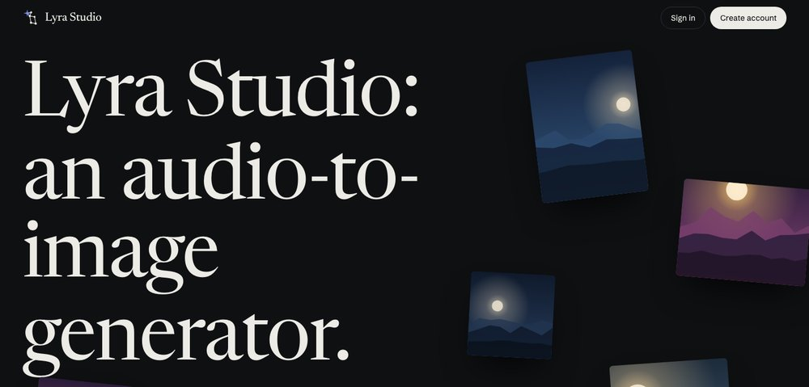
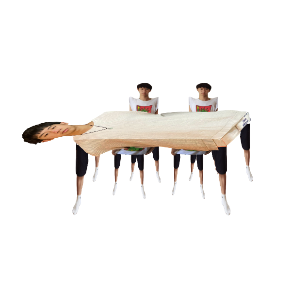

Runbao (Frank) Du
I am a 4th-year undergrad studying Computational and Applied Mathematics (CAAM) with a minor in Astronomy and Astrophysics at the University of Chicago.
My main interest lies in the intersections of AI, music & audio, and ethics. I work in the SUPERGroup at the University of Chicago, as well as the Natural Language Processing Group and the Lab of Audio and Music Technology (FD-LAMT) at Fudan University.
I enjoy making music, writing poems, playing Tetris, and sometimes typing competitively. I also enjoy bouldering and playing ultimate. I love making plans — I make too many plans for everything in my life, and they are probably hindering my productivity. I enjoy thinking about big topics and problems in life and pretending to have solutions for them, even though I don't even have a solution to the second question on my math homework.
I am always looking for new opportunities.
Research
Manuscripts Under Review
A. Row, M. Pickering, R. Du, A. Haniph, A. Arunasalam, and B. Ur. “The Impact of Value-Laden Persona Descriptions on How LLMs Complete Tasks.”
R. Du, W. Li, Q. He. “IncrementDET: Continual AI-Generated Music Detection via Enrollment.” preprint
Other Research
A Statistical and Philosophical Analysis of the "Humanness" in Human Music ongoing
Measuring the perceived humanness in human music through audio statistics and human studies.
Open-source Music-generation Model: MuseV2 ongoing
Building a controllable text-to-music generator with Fudan University's NLP Lab.
UChicago Directed Reading Program Oct 2025 – Jan 2026
Studied algebraic geometry and elliptic curves; delivered a public talk in January 2026.

Build
brain2 — Constructing, maintaining, and "Agentalizing" knowledge Sept 2026 – present
A tool to manage knowledge through embedding and clustering notes, while agents are assigned to these knowledge bases to interact and exchange ideas. Built and served as team lead at AIx Origin Hack 2026.
Selected for the final pitch out of 70+ teams and awarded the ModelScope Open-Source Contribution Award.
Lyra Studio Feb 2026 – present
An audio-to-image generator.

Please contact Runbao for the invitation code!
Audit Copilot — LLM Agent for Multi-track Audio DatasetMay 2026 - July 2026
An LLM agent that automates multi-track dataset QC for Fudan's Lab of Audio and Music Technology.
诗宇 Shiyu — An Interactive 3D Universe for PoetryJuly 2026 – Aug 2026
Visualization for poetry collections.
Award-winning in 2026 WaiTan Hackathon in multiple tracks.
Prezuricle — Multimodal Marketing Platform Jan 2024 – May 2024
A multimodal AI marketing platform co-created with Jason Zhao (USC '27).

Whatnot
A table
